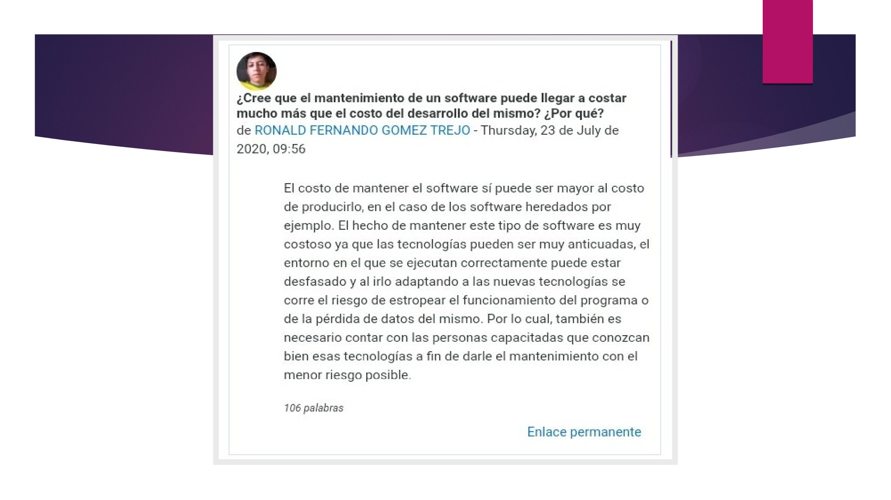
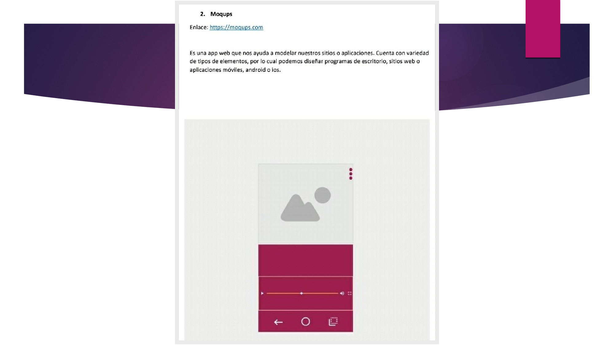
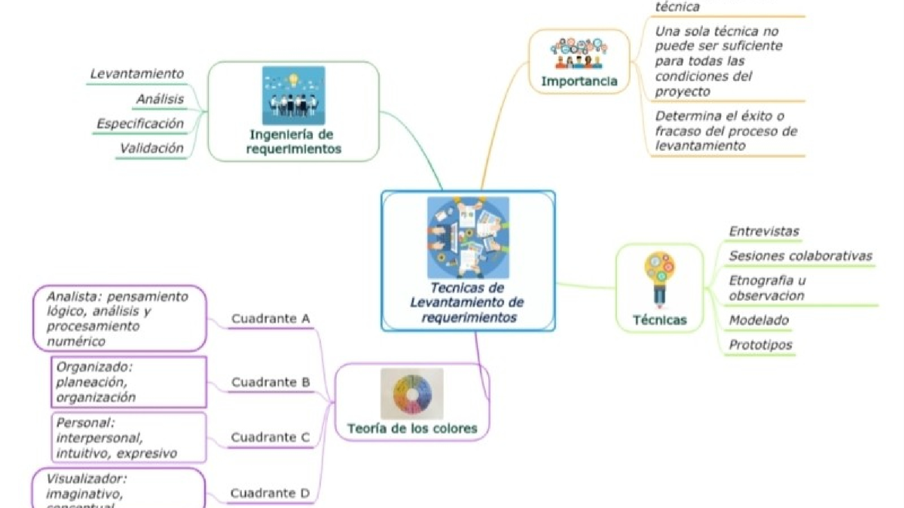
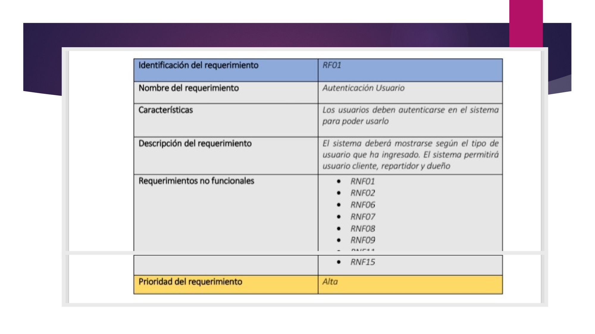

Portafolio Periodo 01
Ronald Fernando Gomez Trejo
Actividad Foro 01
Se respondió en un foro la siguiente interrogante: ¿Cree que el mantenimiento de un software puede llegar a ser más costoso que el desarrollo del mismo?
Para esta actividad leímos parte del capítulo número 1 del libro dedicado al estudio de la materia.

Actividad Foro 02
Ligada a la actividad anterior, se realizó una nueva participación en foro, esta vez listando ventajas y desventajas del uso del software y de la informática en la sociedad.
Actividad Prototipos
En esta actividad realizamos una pequeña investigación acerca de diferentes herramientas de prototipado, y posteriormente construimos una misma UI en estas herramientas para poder compararlas y dar un veredicto.
Actividad Prototipos
Como ya sabemos, estas herramientas sirven para diseñar wireframes que permiten visualizar una proyección de lo que vendría a ser el resultado visual del proyecto en el que estemos trabajando. Estas proyecciones ayudan al cliente (y asimismo al equipo de trabajo) a asimilar y a perfeccionar aún más los requerimientos del producto.
Actividad Prototipos
Por tal motivo, la elaboración de los prototipos se vuelve una tarea esencial en ciertos desarrollos; y de igual manera, conocer las mejores herramientas para satisfacer estas necesidades se vuelve imprescindible.

Actividad Requerimientos
Esta actividad constó de dos partes fundamentalmente: la elaboración de un mapa mental y una infografia. Ambas relacionadas a la temática del levantamiento de requerimientos. Primordialmente se abordaron temáticas de sumo interés, por ejemplo el ciclo que sigue el levantamiento de requerimientos, su Importancia en el desarrollo de software y algunas de las muchas técnicas que son utilizadas para llevar a cabo esta tarea.

Actividad Laboratorio
El laboratorio se desarrolló bajo la temática anterior relacionada al levantamiento de requerimientos. Más específicamente desarrollamos la Especificación de Requisitos de software para una aplicación móvil de gestión de restaurantes.
Actividad Laboratorio
Definimos cómo primer punto, el propósito de nuestro proyecto, el alcance (es decir, qué hará la aplicación y qué no hará), el personal involucrado (nosotros) y otras definiciones necesarias para avanzar en la elaboración del documento.
Actividad Laboratorio
Detallamos la perspectiva del producto a desarrollar, su funcionalidad, a quien va dirigido (el nicho de mercado y sus características) y qué condiciones son necesarias para propiciar el éxito del mismo, sus restricciones y dependencias.
Actividad Laboratorio
Posteriormente listamos cada uno de los requisitos. Los comunes primeramente, y luego los funcionales, los que describen el funcionamiento de la aplicación y los no funcionales, que son los que determinan el cómo lo hace, velocidad, rendimiento, seguridad, etc.


Actividad Mapa Mental Periodo 01
Esta actividad constó de la elaboración de un mapa mental general que abarcara todas las temáticas que se abordaron a lo largo de este primer periodo. Se colocaron las temáticas que vimos desde el principio, por ejemplo, las generalidades del software, los tipos de software y cómo están conformados. Pasamos por temas como la calidad del software, sus componentes, y cómo determinar la calidad. El ciclo de vida del software, y algunos de los modelos que se plantean como primera instancia, modelo cascada, espiral, y posteriormente las metodologías ágiles como scrum, xp, etc.
Repasamos nuevamente los temas de prototipados y finalizamos con el levantamiento de requerimientos, desde lo más general hasta la elaboración del documento de Especificación de Requisitos.